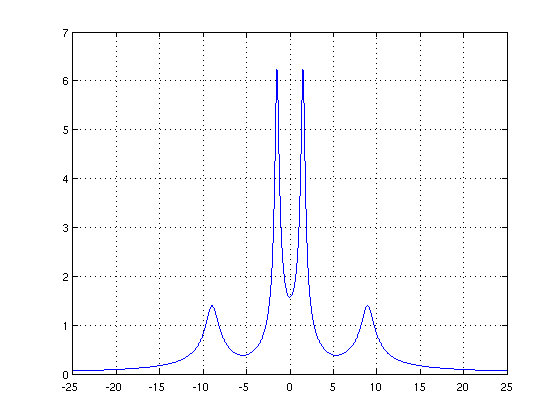
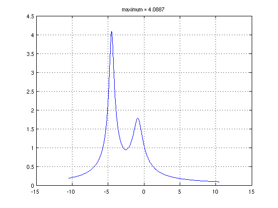
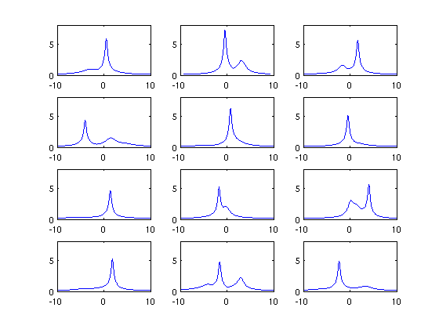

Resolvent norm on the imaginary axis
Nick Trefethen, May 2011
(Chebfun example linalg/ResolventNorm.m)
If A is a square matrix, the resolvent of A for a particular complex number z is the matrix inv(z*I-A). The 2-norm of the resolvent is a quantity of interest in many applications. For example, if norm(inv(zI-A)) = 1/eps for some quantity eps, then there is a matrix E with norm norm(E)=eps such that z is an eigenvalue of A+E. This is the starting point of the theory of pseudospectra [1].
In particular, suppose all the eigenvalues of A are in the left half of the complex plane, so that A is stable in the sense that all solutions of the differential equation du/dt = Au decay to zero as t -> infinity. How small a perturbation matrix E might make A unstable? The answer is norm(E)=eps, where 1/eps is the maximum of norm(inv(zI-A)) as z ranges over the imaginary axis. Therefore in a number of fields such as control theory, there is special interest in the values taken by the norm of the resolvent on the imaginary axis.
Let's compute this function with Chebfun. As an example we take the matrix
A = [-1 3 5 2; -3 -2 4 6; -5 -4 -2 1; -2 -6 -1 3]
A =
-1 3 5 2
-3 -2 4 6
-5 -4 -2 1
-2 -6 -1 3
A has two pairs of eigenvalues near the imaginary axis:
format short, eig(A)
ans = -0.7688 + 8.9660i -0.7688 - 8.9660i -0.2312 + 1.5019i -0.2312 - 1.5019i
Suppose z=x+iy. It takes Chebfun a fraction of a second to compute a chebfun representating norm(inv(zI-A)) as a function of y, with x=0. Here is that calculation and a plot of the result:
I = eye(size(A)); nr = @(y) 1/min(svd(1i*y*I-A)); f = chebfun(nr,[-25,25],'vectorize'); LW = 'linewidth'; plot(f,LW,1.6), grid on
The maximum of f is this,
maxf = max(f)
maxf =
6.2275
and the distance to instability is the reciprocal of this quantity,
dist_sing = 1/maxf
dist_sing =
0.1606
Let us consider another example matrix, and this time, let's make an anonymous function to construct the chebfun.
normfun = @(A) chebfun(@(y) 1/min(svd(1i*y*eye(size(A))-A)),... 1.5*norm(A)*[-1,1],'vectorize');
Here is a 5x5 which we take to be complex, to break the symmetry:
B = [ -3-2i 1+1i -1i 0 -1+1i
0 -2-3i -1i 1i -2-1i
1i 0 -2-4i -2-1i 2-1i
0 1 1i -2-4i 1i
1-2i 0 1 1 -2-3i ];
eig(B)
ans = -5.3054 - 3.2003i -0.6662 - 0.8209i -0.3296 - 4.5158i -2.9797 - 3.2972i -1.7191 - 4.1659i
And here is its resolvent norm plot:
fB = normfun(B); plot(fB,LW,1.6), grid on title(['maximum = ' num2str(max(fB))]);
Here are 12 random 6x6 complex matrices, all with rightmost eigenvalue having real part -0.25:
randn('seed',1) for j = 1:12 N = 6; A = randn(N) + 1i*randn(N) + 2i*diag(randn(N,1)); abscissa = max(real(eig(A))); A = A - (abscissa+0.25)*eye(N); subplot(4,3,j) plot(normfun(A),LW,1) axis([-10 10 0 8]), drawnow end
References:
[1] L. N. Trefethen and M. Embree, Spectra and Pseudospectra: The Behavior of Nonnormal Matrices and Operators, Princeton U. Press, 2005.